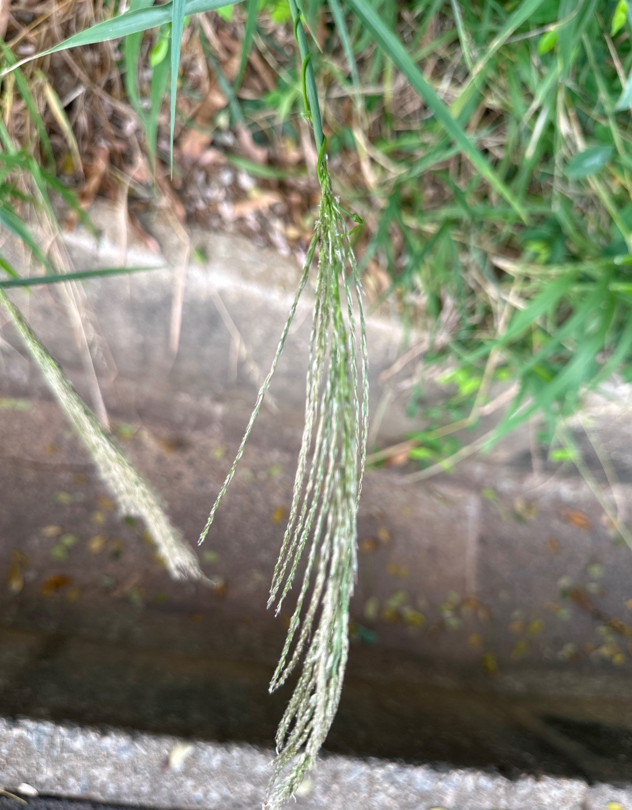

Problème résolu par les Graminées :
Les graines nues des conifères restent exposées à la sécheresse et aux animaux : il faut mieux les protéger.
Innovation apportée par les Graminées :
La fleur et le fruit protègent la graine, et le vent transporte le pollen. Le fruit des graminées est un grain : blé, riz, maïs, mil.


Appareil reproduction du Megathyrsus
Le Megathyrsus possède une inflorescence en panicule composée de petits épillets. Ses fleurs portent des étamines et un pistil. La pollinisation se fait par le vent et la fécondation permet la formation de graines.
Megathyrsus
Megathyrsus est un genre de plantes herbacées appartenant à la famille des Poaceae (graminées). Il comprend notamment Megathyrsus maximus, anciennement appelé Panicum maximum, connu sous le nom de herbe de Guinée.